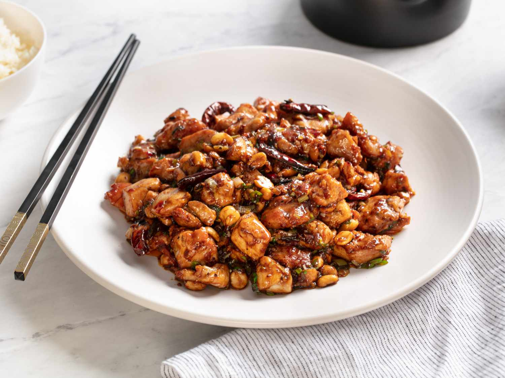

Chinese Cuisine

Appetizers
- Spring Rolls
Ingredients:
- 1 package spring roll wrappers
- 1 cup shredded cabbage
- 1 carrot, peeled and julienned
- 1 cup bean sprouts
- 6 oz firm tofu, diced into small cubes
- 2 Tbsp soy sauce
- 1 tsp sesame oil
Steps:
- Wash the vegetables thoroughly under running water.
- Use a grater or mandoline to slice the carrot into thin matchsticks.
- Pat the tofu dry with paper towels before dicing it.
- In a large bowl, mix together the shredded cabbage, julienned carrot, bean sprouts, diced tofu, soy sauce and sesame oil until well combined.
- Fill a small bowl with water to use for sealing the spring rolls.
- Place a spring roll wrapper on a clean, flat surface. Place 2-3 Tbsp of filling horizontally across the center of the wrapper, leaving about 2 inches uncovered on both sides.
- Fold the left and right sides of the wrapper over the filling, then roll it up tightly from bottom to top. Dab a bit of water along the edge to seal the roll closed.
- Repeat with remaining wrappers and filling. Cover filled rolls with a damp paper towel to prevent drying.
- In batches, fry the spring rolls in oil at 350F until golden brown and crispy, about 2-3 minutes per side.
- Wonton Soup
Ingredients:
- 1 lb ground pork
- 1 tsp freshly grated ginger
- 2 Tbsp soy sauce
- 1 egg, beaten
- 48 wonton wrappers
- 6 cups chicken broth
- 4 cups fresh spinach
- 1 Tbsp toasted sesame oil
Steps:
- In a medium bowl, combine the ground pork, grated ginger, soy sauce and beaten egg. Mix well until uniformly combined.
- Place a wonton wrapper on a clean work surface. Scoop 1 tsp of filling into the center of the wrapper.
- Use your finger to brush the edges of the wrapper lightly with water. Fold the wrapper diagonally in half to form a triangle, pressing along the edges to seal tightly.
- Repeat with remaining wrappers and filling. Place finished wontons on a baking sheet dusted with flour to prevent sticking.
- Bring the chicken broth to a boil in a large pot. Add the wontons in batches and simmer gently for 3-4 minutes until they float to the top and the pork is cooked through.
- Stir in the spinach and cook until just wilted, about 1 minute. Remove pot from heat.
- Ladle the wonton soup into serving bowls. Drizzle sesame oil over each bowl before serving.
Main Courses
- Kung Pao Chicken

Ingredients:
- 2 boneless, skinless chicken breasts, diced into 1-inch pieces
- 2 Tbsp soy sauce
- 2 Tbsp rice vinegar
- 1 Tbsp toasted sesame oil
- 2 Tbsp vegetable oil
- 4 dried red chilies, chopped
- 1 small onion, diced
- 2 garlic cloves, minced
- 1 cup roasted unsalted peanuts
Steps:
- In a medium bowl, combine chicken pieces with soy sauce, rice vinegar and sesame oil. Toss to coat evenly and let marinate for 30 minutes.
- Heat vegetable oil in a wok or large skillet over very high heat. Add the chilies and onions and stir-fry for 1 minute.
- Add the garlic and continue stir-frying for 30 seconds until fragrant.
- Add the marinated chicken pieces. Stir-fry for 3-4 minutes until chicken is lightly browned on the outside and opaque throughout.
- Turn heat down to medium. Add the roasted peanuts and gently toss everything together until peanuts are evenly distributed.
- Mapo Tofu

Ingredients:
- 1 block firm tofu, patted dry and cubed
- 1 Tbsp Sichuan peppercorns
- 1 Tbsp vegetable oil
- 1 lb ground pork
- 1 Tbsp Pixian doubanjiang (chili bean paste)
- 1 tsp freshly grated ginger
- 2 garlic cloves, minced
- 2 green onions, chopped
- 1/4 cup chicken broth
- 1 tsp toasted sesame oil
Steps:
- Place Sichuan peppercorns in a mortar and pestle or spice grinder. Grind into a fine powder and set aside.
- Heat vegetable oil in a wok or skillet over high heat. Add ground pork and stir-fry, breaking it up with a spoon, until no longer pink, about 2-3 minutes.
- Add the doubanjiang paste, grated ginger and garlic. Continue cooking for 2 more minutes.
- Add the tofu cubes, green onions and chicken broth to the wok. Gently simmer for 2 minutes until tofu is heated through.
- Remove pan from heat. Stir in the sesame oil. Transfer mapo tofu to a serving bowl.
- Garnish with a sprinkling of freshly ground Sichuan pepper powder before serving.